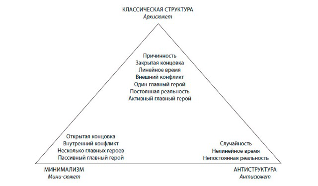
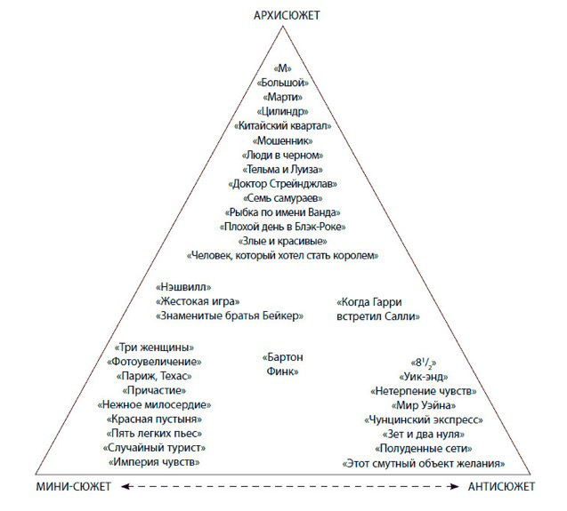

Перепост записи из сообщества storytelling_ru
Принципы классической структуры были известны еще 4000 лет назад, когда на двенадцати клинописных табличках была высечена эпическая поэма о Гильгамеше, ставшая древнейшим в мире литературным произведением, зафиксированным в письменном виде.
Классическая структура — это история, завершающаяся полным и необратимым изменением, в центре которой находится активный главный герой, противостоящий главным образом внешним силам и добивающийся желаемого на протяжении длительного времени в рамках постоянной и причинно-обусловленной вымышленной реальности.
Этот набор вечных принципов я называю «архисюжетом»: в данном случае приставка «архи» используется в своем словарном значении, которое звучит как «старшинство, главенство; высшая степень чего-либо».

Архисюжет — это мясо, картофель, макароны, рис и пшенная каша мирового кинематографа. В течение последних ста лет он лег в основу огромного числа фильмов. Тем не менее архисюжет — не единственная форма повествования. В левый нижний угол треугольника я поместил все примеры минимализма. Как очевидно из самого названия, минимализм предполагает, что автор начинает с элементов классической структуры, а затем сокращает их, сужая или сжимая, избавляя от излишеств или усекая характерные детали архисюжета. Я называю этот набор минималистических вариантов мини-сюжетом.
В правом нижнем углу треугольника находится антисюжет, представляющий собой кинематографический аналог антиромана, или «нового романа», и театра абсурда. Данный набор антиструктурных вариантов не предполагает сокращение классического сюжета, а поворачивает его в обратном направлении, вступая в противоречие с традиционными формами и даже высмеивая саму идею формальных принципов. Создателя антисюжета редко интересует минимализм или простота; напротив, чтобы прояснить свои «революционные» замыслы, он дает жизнь фильмам, которым присуща экстравагантность и осознанное преувеличение.
Закрытая и открытая концовка
Архисюжет предполагает наличие закрытой концовки, когда даются ответы на все вопросы, поднятые историей, и удовлетворяются все вызванные ею эмоции. Зрители покидают кинотеатр с чувством полного удовлетворения — не остается никаких сомнений, ничего недосказанного.
Мини-сюжет, напротив, часто оставляет концовку открытой. Большинство проблем, возникших по ходу развития истории, решается, однако остаются один-два вопроса, на которые должны ответить сами зрители. Почти все вызванные фильмом переживания будут удовлетворены, но некоторый осадок в душе останется. Несмотря на то, что мини-сюжет может завершиться смысловой и эмоциональной недосказанностью, определение «открытый» не означает, что фильм прерывается на середине, оставляя все в подвешенном состоянии. Чувство должно быть понятным, а вопрос таким, чтобы зритель мог ответить на него самостоятельно. Все происходящее на экране следует приводить к ясным и четким альтернативам, позволяющим перевести концовку в статус закрытой.
Если в кульминационный момент истории происходит полное и необратимое изменение, даются ответы на все вопросы, поднятые в фильме, и удовлетворяются все эмоции, возникшие у зрителей, то это закрытая концовка.
Если кульминация истории оставляет без ответа один или два вопроса и некоторые неудовлетворенные эмоции, то речь идет об открытой концовке. Сценарист, использующий мини-сюжет, сознательно оставляет столь важную часть работы зрителю.
Внешний и внутренний конфликт
В архисюжете особое внимание уделяется внешнему конфликту. Хотя его персонажи нередко подвержены сильным внутренним противоречиям, на первый план выходит их борьба с другими людьми, социальными институтами или какими-либо силами, существующими в материальном мире. В мини-сюжете, напротив, у главного героя могут быть достаточно сильные разногласия с семьей, обществом и окружением, однако главное внимание уделяется тем битвам, которые бушуют в его мыслях и чувствах.
Один или несколько главных героев
В центре повествования классически рассказанной истории, как правило, один главный герой — мужчина, женщина или ребенок. На протяжении всего экранного времени доминирует одна основная история, а главный герой играет в ней самую важную роль. Однако если сценарист разбивает фильм на несколько небольших историй, своего рода подсюжеты, в каждом из которых есть свой главный герой, то стремительное развитие архисюжета замедляется и возникает вариант мини-сюжета, ставшего столь популярным в 1980-х годах.
Активный и пассивный главный герой
Единственному главному герою архисюжета, как правило, присущи активность и энергичность: он осознанно стремится к осуществлению своего желания через постоянно обостряющийся конфликт и изменение. Главного героя мини-сюжета нельзя назвать инертным, но он зачастую лишь реагирует на происходящее и достаточно пассивен. Обычно эта пассивность компенсируется сильной внутренней борьбой или драматическими событиями, которые происходят вокруг него.
Активный главный герой в погоне за мечтой предпринимает действия, вступая в прямой конфликт с людьми и окружающим его миром. Пассивный главный герой внешне не проявляет активности, но стремится решить свои внутренние проблемы, вступая в конфликт с противоречивыми чувствами и особенностями собственного характера.
Линейное и нелинейное время
Действие архисюжета начинается в определенный момент, эллиптически развивается на протяжении более или менее длительного временного промежутка, после чего заканчивается. Если в фильме используются короткие ретроспективные эпизоды (флэшбэки), то они представлены таким образом, чтобы зрители могли расположить события истории в правильном порядке. Антисюжет, напротив, нередко разделен на смещенные во времени фрагменты, что усложняет, если не делает невозможным, понимание происходящего в какой-либо линейной последовательности. Годар однажды заметил, что, согласно его эстетике, фильм должен иметь начало, середину и конец… но не обязательно именно в таком порядке.
История с «обратными кадрами» или без них, в которой события выстраиваются в последовательности, понятной зрителям, излагается в линейном времени. История, которая беспорядочно перескакивает с одного момента времени на другой или слишком запутывает временную последовательность, и зрители не могут понять, что происходит раньше, а что — потом, излагается в нелинейном времени.
Причинность и случайность
В архисюжете особое внимание уделяется тому, что происходит в мире, как причина приводит к следствию, а это следствие становится причиной, инициирующей еще одно следствие. Классическая структура истории отражает бесконечную взаимосвязанность всего сущего — от очевидного до непостижимого, от глубоко интимного до эпического, от отдельной личности до международной инфосферы. Она выявляет совокупность случайностей, понимание которых придает жизни смысл. В антисюжете, напротив, причинность часто заменяется случайностью, главное внимание уделяется хаосу мироздания, который разрушает цепь причинности и ведет к раздробленности, бессмысленности и абсурду.
Причинность управляет историей, где мотивированные действия приводят к определенным последствиям, которые, в свою очередь, становятся причиной других действий и тем самым соединяют различные уровни конфликта в единую цепь эпизодов, которая завершается общей кульминацией, демонстрирующей взаимозависимость жизненных явлений.
Случайность управляет вымышленным миром, где немотивированные действия приводят в движение события, не вызывающие каких-либо последствий, и, таким образом, разделяют историю на неоднородные эпизоды, что приводит к открытой концовке, которая отражает существование, лишенное логической связи.
Постоянная и непостоянная реальность
История — это метафора жизни. Она выводит нас за пределы фактического и приближает к сути. Следовательно, было бы ошибкой использовать один и тот же стандарт для реальности и истории. Создаваемые нами миры живут по своим причинно-обусловленным правилам. Архисюжет разворачивается в рамках постоянной реальности… однако в данном случае реальность не означает «подлинные обстоятельства». Даже наиболее натуралистичный, «приближенный к жизни» мини-сюжет отражает абстрактное существование. Каждая вымышленная реальность сама определяет то, что происходит внутри нее. В архисюжете эти правила не могут быть нарушены — даже если они весьма необычны.
Постоянная реальность — это вымышленные обстоятельства, определяющие формы взаимодействия между персонажами и их миром, которые остаются неизменными на протяжении всей истории, придавая ей осмысленность.
Так, в основе практически всех работ в жанре фэнтези лежит архисюжет, где строго соблюдаются причудливые правила «реальности». Вспомните, как в фильме «Кто подставил кролика Роджера» (Who Framed Roger Rabbit) персонаж, которого играет актер, вынужден преследовать Роджера, мультипликационного героя. Перед закрытой дверью Роджер неожиданно становится плоским и проскальзывает в щель. А человек с грохотом натыкается на преграду. Отлично. Но теперь это становится правилом истории: никто не может поймать Роджера, потому что он способен перейти в двухмерное состояние и уйти от погони. Если бы сценарист хотел, чтобы в следующей сцене Роджера поймали, то ему пришлось бы ввести в сценарий агента-«мультяшку» или вернуться к предыдущей сцене погони и переписать ее заново. Установив правила причинности своей истории, сценарист, использующий архисюжет, должен работать в рамках установленных им самим правил. Таким образом, постоянная реальность предполагает внутренне устойчивый мир, правдивый сам по себе.
Непостоянная реальность — это обстоятельства, которые нарушают порядок расположения различных форм взаимодействия, и в результате эпизоды истории непоследовательно перемещаются из одной «реальности» в другую, создавая ощущение абсурдности происходящего.
Тем не менее один закон в антисюжете все-таки действует, и он предписывает нарушать любые правила.
